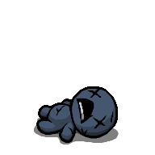
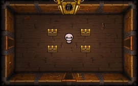

Blue Baby

esse chefe pode ser encontrado nos andares:
- Báu
- O void


podendo ser encontrtado no andar do báu, igual como o chefe isaac, blue baby começa deitado no meido da sala, mas quando começa a atacar ele, tende a se mover pela sala mais frequentemente, com muito mais progeteis teleguiados e invocação de moscas que o protegem e atacam o jogador
você pode encontrar o chefe blue baby no andar do O void, podem derrota-lo nesse andar não dá conquista para liberar itens